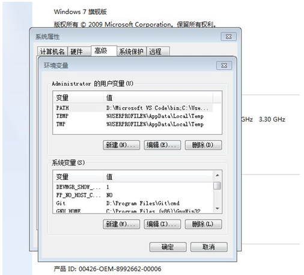
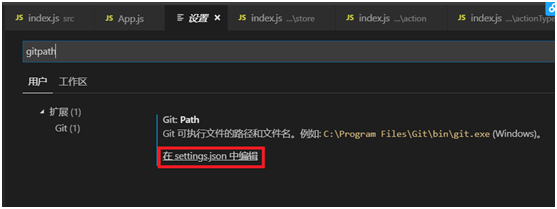
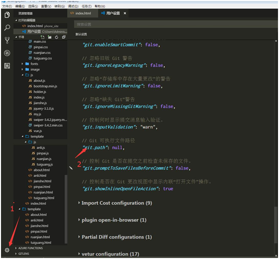
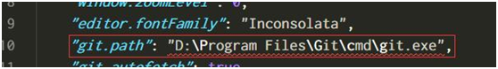
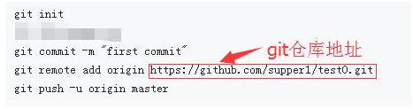
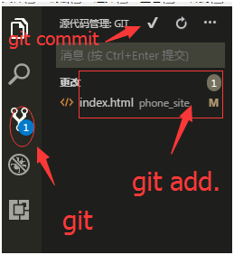
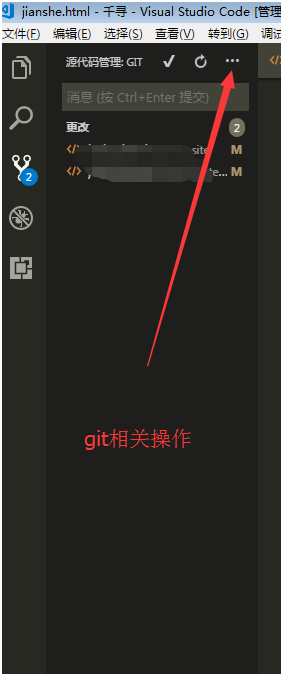

1.vscode中git的配置
首先需要你的电脑上已经安装了git，且window电脑里git添加到环境变量中去了。
这样你的电脑就可以使用git了，但是想要在vccode中使用git还要配置git.path。
git.path是git中的一个exe文件路径，找到你的电脑git的安装目录，找到里面的cmd文件夹。里面的git.exe文件把该文件的完整路径复制下来。
 点击设置在设置里找到git设置里面的git.path选项。将设置复制到右边的用户默认设置
把git.exe文件的路径复制到这里就可以了。
2.vacode中git的使用，与github的免密码上传
先中指令git init在文件夹创建git相关配置文件，然后用执行以下几句
  